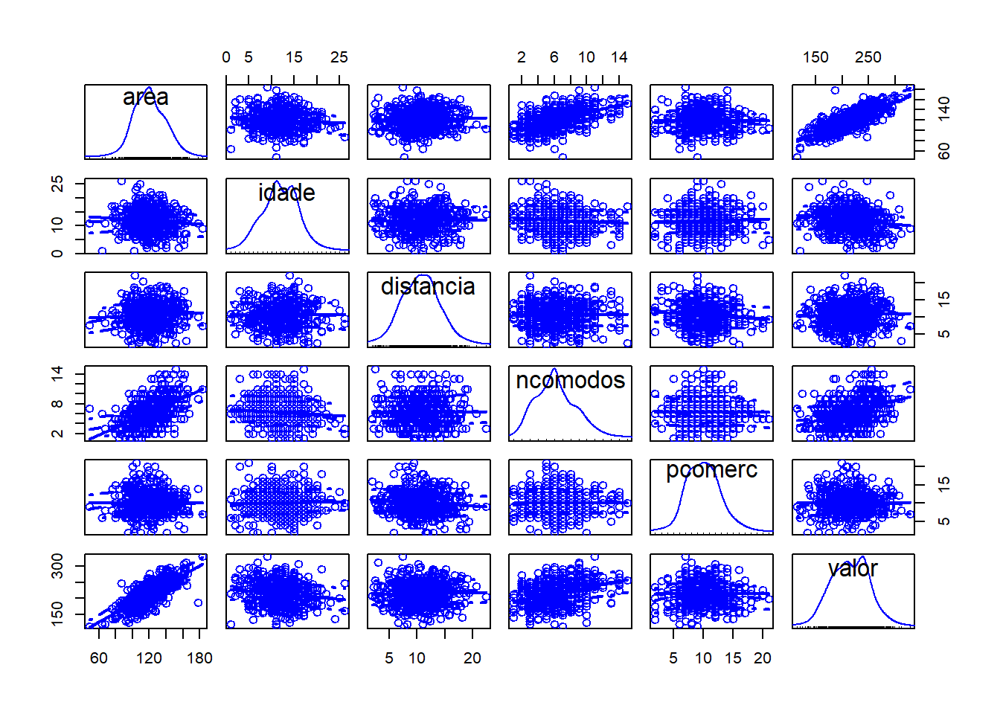
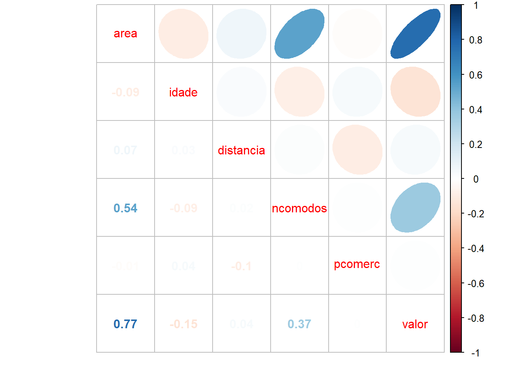
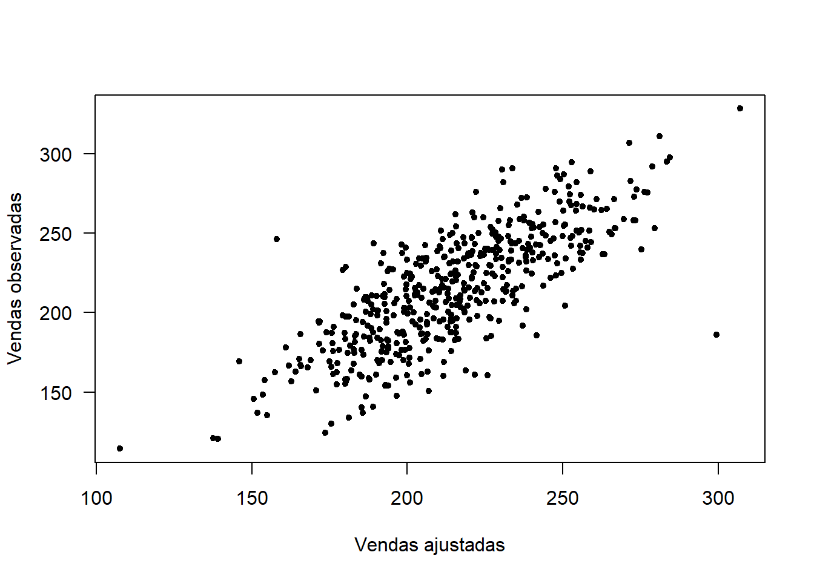
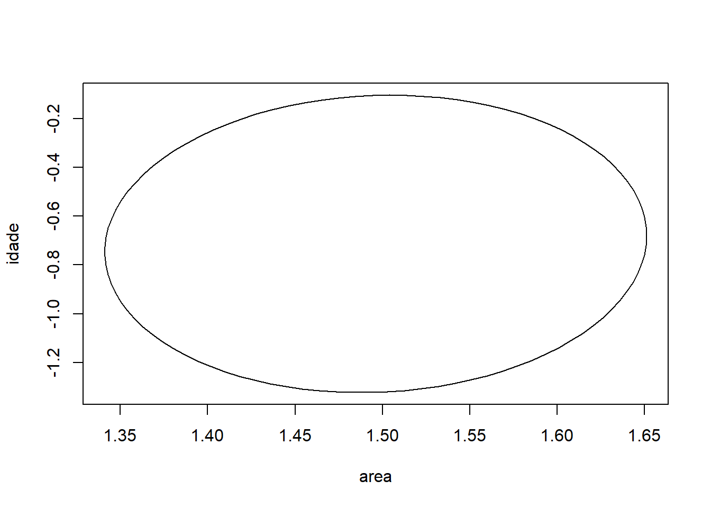
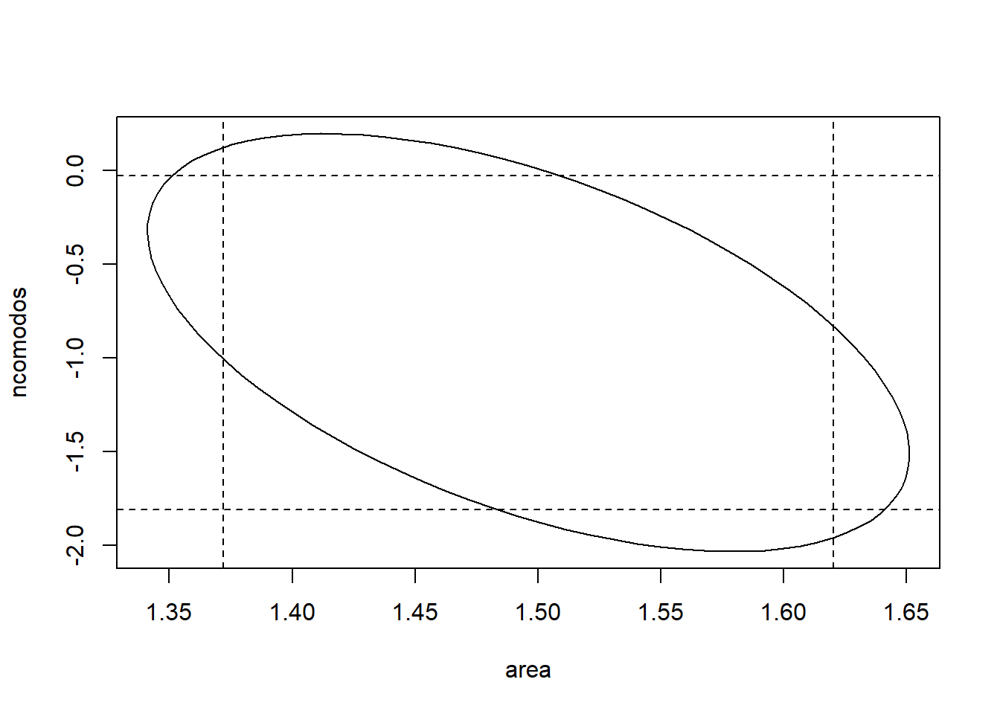
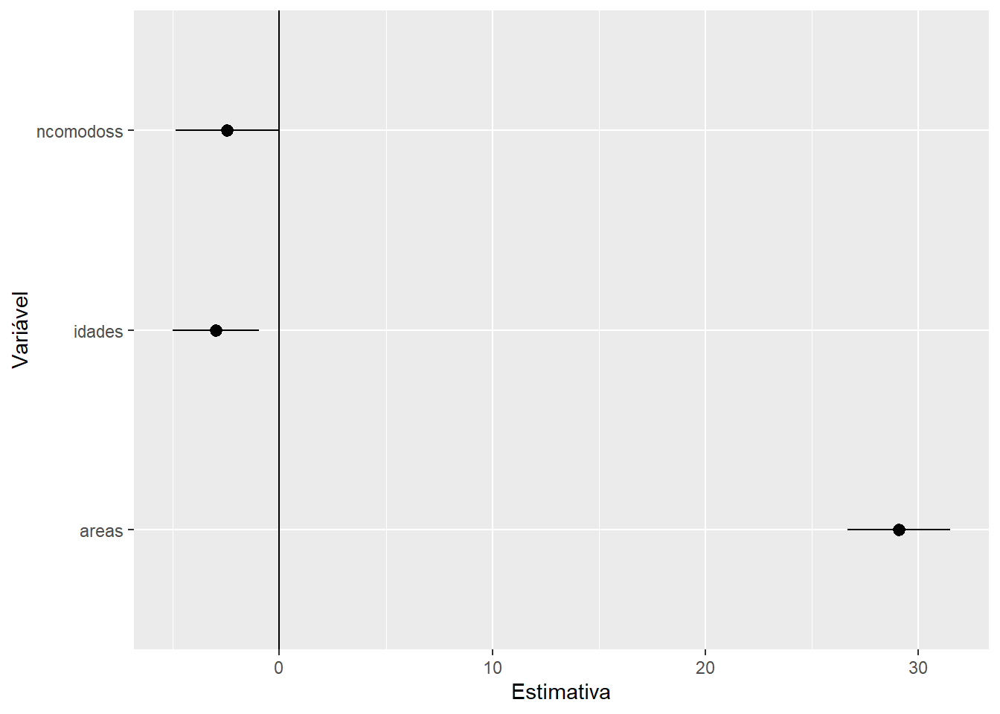

Módulo 3 - Regressão linear múltipla
Cesar Taconeli
Exemplo - Regressão linear múltipla aplicada à modelagem do preço de venda de imóveis. As variáveis são as seguintes:
area: Área do imóvel (\(m^2\))
idade: Idade do imóvel (anos)
distancia: Distância do imóvel ao marco central do município (em km)
ncomodos: Número de cômodos
pcomerc: Número de pontos comerciais num raio de um quilômetro
valor: Preço de venda do imóvel (variável resposta, em milhares de dólares)
dados <- read.csv2('https://docs.ufpr.br/~taconeli/CE07118/Imoveis18.csv')
# dados <- read.csv2('Imoveis18.csv')
head(dados,3)## area idade distancia ncomodos pcomerc valor
## 1 100.8 15 5.8 3 18 190.232
## 2 114.4 10 8.7 6 13 204.368
## 3 86.9 13 17.1 5 9 162.940## area idade distancia ncomodos
## Min. : 48.6 Min. : 1.00 Min. : 2.00 Min. : 1.00
## 1st Qu.:107.2 1st Qu.: 9.00 1st Qu.: 8.20 1st Qu.: 4.00
## Median :119.6 Median :12.00 Median :10.70 Median : 6.00
## Mean :120.4 Mean :11.96 Mean :10.66 Mean : 6.28
## 3rd Qu.:134.0 3rd Qu.:15.00 3rd Qu.:12.90 3rd Qu.: 8.00
## Max. :183.6 Max. :26.00 Max. :22.30 Max. :15.00
## pcomerc valor
## Min. : 2.00 Min. :114.5
## 1st Qu.: 8.00 1st Qu.:187.2
## Median :10.00 Median :214.5
## Mean :10.11 Mean :214.8
## 3rd Qu.:12.00 3rd Qu.:240.7
## Max. :21.00 Max. :328.2require(magrittr)
require(car)
require(corrplot)
require(effects)
require(ggplot2)
par(cex=1.2)
scatterplotMatrix(dados) 
Matriz de gráficos de dispersão. Os resultados fornecem um primeiro indicativo de correlação positiva entre o preço de venda e a área e número de cômodos do imóvel. Também há alguma evidência de correlação negativa em relação à idade do imóvel.

Ajuste 1
Vamos ajustar o modelo de regressão linear múltipla:
O mesmo modelo pode ser ajustado, de forma mais breve, através do seguinte comando:
## (Intercept) area idade distancia ncomodos pcomerc
## 1 1 100.8 15 5.8 3 18
## 2 1 114.4 10 8.7 6 13
## 3 1 86.9 13 17.1 5 9Três primeiras linhas da matriz do modelo.
Vamos extrair os principais resultados da análise.
##
## Call:
## lm(formula = valor ~ ., data = dados)
##
## Coefficients:
## (Intercept) area idade distancia ncomodos
## 48.5587 1.4961 -0.7131 -0.1358 -0.9178
## pcomerc
## 0.1818Estimativas de mínimos quadrados dos parâmetros de regressão.
##
## Call:
## lm(formula = valor ~ ., data = dados)
##
## Residuals:
## Min 1Q Median 3Q Max
## -113.273 -15.380 1.033 15.609 88.161
##
## Coefficients:
## Estimate Std. Error t value Pr(>|t|)
## (Intercept) 48.55874 8.66221 5.606 3.45e-08 ***
## area 1.49608 0.06315 23.689 < 2e-16 ***
## idade -0.71313 0.24806 -2.875 0.00422 **
## distancia -0.13578 0.29737 -0.457 0.64817
## ncomodos -0.91784 0.45447 -2.020 0.04397 *
## pcomerc 0.18177 0.33323 0.545 0.58568
## ---
## Signif. codes: 0 '***' 0.001 '**' 0.01 '*' 0.05 '.' 0.1 ' ' 1
##
## Residual standard error: 23.05 on 494 degrees of freedom
## Multiple R-squared: 0.6028, Adjusted R-squared: 0.5988
## F-statistic: 149.9 on 5 and 494 DF, p-value: < 2.2e-16Os resultados do ajuste indicam que o valor de venda está associado à área, número de cômodos e idade do imóvel.
Estima-se, em média, um aumento de 1496 dólares para cada m^2 a mais de área; uma redução de 713 dólares a cada ano a mais de idade e redução de 917 dólares a cada cômodo a mais. Em cada uma dessas afirmativas estamos considerando fixos os valores das demais variáveis explicativas.
Vamos ajustar modelos de regressão linear simples para cada variável explicativa e comparar os resultados.
##
## Call:
## lm(formula = valor ~ area, data = dados)
##
## Residuals:
## Min 1Q Median 3Q Max
## -111.065 -15.520 0.341 15.078 80.100
##
## Coefficients:
## Estimate Std. Error t value Pr(>|t|)
## (Intercept) 41.43513 6.52234 6.353 4.77e-10 ***
## area 1.43980 0.05347 26.929 < 2e-16 ***
## ---
## Signif. codes: 0 '***' 0.001 '**' 0.01 '*' 0.05 '.' 0.1 ' ' 1
##
## Residual standard error: 23.24 on 498 degrees of freedom
## Multiple R-squared: 0.5929, Adjusted R-squared: 0.592
## F-statistic: 725.2 on 1 and 498 DF, p-value: < 2.2e-16##
## Call:
## lm(formula = valor ~ idade, data = dados)
##
## Residuals:
## Min 1Q Median 3Q Max
## -108.171 -24.687 0.064 26.289 109.547
##
## Coefficients:
## Estimate Std. Error t value Pr(>|t|)
## (Intercept) 230.373 4.878 47.225 < 2e-16 ***
## idade -1.300 0.385 -3.376 0.000794 ***
## ---
## Signif. codes: 0 '***' 0.001 '**' 0.01 '*' 0.05 '.' 0.1 ' ' 1
##
## Residual standard error: 36.02 on 498 degrees of freedom
## Multiple R-squared: 0.02237, Adjusted R-squared: 0.02041
## F-statistic: 11.4 on 1 and 498 DF, p-value: 0.0007937##
## Call:
## lm(formula = valor ~ distancia, data = dados)
##
## Residuals:
## Min 1Q Median 3Q Max
## -99.230 -27.032 -0.391 26.548 114.562
##
## Coefficients:
## Estimate Std. Error t value Pr(>|t|)
## (Intercept) 210.8875 5.2277 40.340 <2e-16 ***
## distancia 0.3697 0.4660 0.793 0.428
## ---
## Signif. codes: 0 '***' 0.001 '**' 0.01 '*' 0.05 '.' 0.1 ' ' 1
##
## Residual standard error: 36.41 on 498 degrees of freedom
## Multiple R-squared: 0.001263, Adjusted R-squared: -0.0007428
## F-statistic: 0.6296 on 1 and 498 DF, p-value: 0.4279##
## Call:
## lm(formula = valor ~ ncomodos, data = dados)
##
## Residuals:
## Min 1Q Median 3Q Max
## -108.787 -22.005 0.469 23.466 89.865
##
## Coefficients:
## Estimate Std. Error t value Pr(>|t|)
## (Intercept) 183.5239 3.8391 47.803 <2e-16 ***
## ncomodos 4.9849 0.5618 8.873 <2e-16 ***
## ---
## Signif. codes: 0 '***' 0.001 '**' 0.01 '*' 0.05 '.' 0.1 ' ' 1
##
## Residual standard error: 33.85 on 498 degrees of freedom
## Multiple R-squared: 0.1365, Adjusted R-squared: 0.1348
## F-statistic: 78.74 on 1 and 498 DF, p-value: < 2.2e-16##
## Call:
## lm(formula = valor ~ pcomerc, data = dados)
##
## Residuals:
## Min 1Q Median 3Q Max
## -100.27 -27.57 -0.19 25.89 113.55
##
## Coefficients:
## Estimate Std. Error t value Pr(>|t|)
## (Intercept) 214.33202 5.54063 38.684 <2e-16 ***
## pcomerc 0.04916 0.52360 0.094 0.925
## ---
## Signif. codes: 0 '***' 0.001 '**' 0.01 '*' 0.05 '.' 0.1 ' ' 1
##
## Residual standard error: 36.43 on 498 degrees of freedom
## Multiple R-squared: 1.77e-05, Adjusted R-squared: -0.00199
## F-statistic: 0.008816 on 1 and 498 DF, p-value: 0.9252Observe o efeito do número de cômodos no valor de venda do imóvel no modelo de regressão linear múltipla e no modelo de regressão linear simples. O que ocorre? Você tem uma justificativa? Conversamos na sala de aula.
Valores ajustados pelo modelo de regressão linear múltipla
## 1 2 3
## 188.3977 208.2540 164.0226Resíduos
## 1 2 3
## 1.834266 -3.886045 -1.082600Estimativa de \(\sigma^2\)
## [1] 531.4171Coeficiente de determinação
## [1] 0.602777Aproximadamente 60% da variação dos dados é explicada pelo modelo.
Coeficiente de determinação ajustado
## [1] 0.5987565plot(fitted(ajuste1), dados$valor, pch = 20,xlab = 'Vendas ajustadas',
ylab = 'Vendas observadas', las = 1) 
Gráfico de valores observados vs valores ajustados.
## 2.5 % 97.5 %
## (Intercept) 31.5394135 65.57806196
## area 1.3719996 1.62016735
## idade -1.2005184 -0.22575090
## distancia -0.7200369 0.44848607
## ncomodos -1.8107703 -0.02490471
## pcomerc -0.4729642 0.83649878Intervalos de confiança (95%) para os parâmetros do modelo.
Agora vamos fazer algumas predições.
dnovos <- data.frame(area = c(80, 100, 150), idade = c(5, 10, 10),
distancia = c(15, 12, 10), ncomodos = c(5, 6, 8),
pcomerc = c(10, 10, 10))
dnovos## area idade distancia ncomodos pcomerc
## 1 80 5 15 5 10
## 2 100 10 12 6 10
## 3 150 10 10 8 10## 1 2 3
## 159.8716 185.7171 258.9571Estimativas pontuais para os preços de venda para os novos dados.
## fit lwr upr
## 1 159.8716 153.0285 166.7147
## 2 185.7171 182.2476 189.1866
## 3 258.9571 255.1371 262.7772Intervalos de confiança (95%) para os preços médios de venda de imóveis com os três “perfis”.
## fit lwr upr
## 1 159.8716 114.0646 205.6786
## 2 185.7171 140.2914 231.1428
## 3 258.9571 213.5033 304.4109Intervalos de predição (95%) para o valor de venda de três novos imóveis com as características especificadas.
Intervalos de confiança para os preços médios de venda de imóveis com os perfis dos imóveis da base.
## area idade distancia ncomodos pcomerc fit lwr upr
## 1 100.8 15 5.8 3 18 188.3977 181.8104 194.9851
## 2 114.4 10 8.7 6 13 208.2540 205.0985 211.4096
## 3 86.9 13 17.1 5 9 164.0226 158.2217 169.8235Intervalos de predição para os preços de venda de novos imóveis com os perfis dos imóveis da base.
## area idade distancia ncomodos pcomerc fit lwr upr
## 1 100.8 15 5.8 3 18 188.3977 142.6282 234.1673
## 2 114.4 10 8.7 6 13 208.2540 162.8512 253.6568
## 3 86.9 13 17.1 5 9 164.0226 118.3596 209.6856Agora, alguns testes de hipóteses. Começamos pelo quadro da anova.
## Analysis of Variance Table
##
## Response: valor
## Df Sum Sq Mean Sq F value Pr(>F)
## area 1 391814 391814 737.2996 < 2.2e-16 ***
## idade 1 4120 4120 7.7537 0.005566 **
## distancia 1 119 119 0.2245 0.635849
## ncomodos 1 2157 2157 4.0586 0.044489 *
## pcomerc 1 158 158 0.2975 0.585681
## Residuals 494 262520 531
## ---
## Signif. codes: 0 '***' 0.001 '**' 0.01 '*' 0.05 '.' 0.1 ' ' 1O que podemos concluir:
Efeito significativo da inclusão de area (conforme a redução na soma de quadrados de resíduos) ao modelo nulo (p < 0.0001);
Efeito significativo da inclusão de idade (conforme a redução na soma de quadrados de resíduos) ao modelo ajustado pelo efeito de area (p = 0.0055);
Efeito não significativo da inclusão de distancia (conforme a redução na soma de quadrados de resíduos) ao modelo ajustado pelos efeitos de area e idade (p = 0.6358);
Efeito significativo da inclusão de ncomodos (conforme a redução na soma de quadrados de resíduos) ao modelo ajustado pelos efeitos de area, idade e distancia (p = 0.0444);
Efeito não significativo da inclusão de pcomerc (conforme a redução na soma de quadrados de resíduos) ao modelo ajustado pelos efeitos de area, idade, distancia e ncomodos (p = 0.5856).
E se mudarmos a ordem de declaração das variáveis?
ajuste1_alt <- lm(valor ~ pcomerc + ncomodos + area + idade + distancia , data = dados)
anova(ajuste1_alt)## Analysis of Variance Table
##
## Response: valor
## Df Sum Sq Mean Sq F value Pr(>F)
## pcomerc 1 12 12 0.0220 0.882107
## ncomodos 1 90220 90220 169.7732 < 2.2e-16 ***
## area 1 303576 303576 571.2580 < 2.2e-16 ***
## idade 1 4449 4449 8.3721 0.003978 **
## distancia 1 111 111 0.2085 0.648166
## Residuals 494 262520 531
## ---
## Signif. codes: 0 '***' 0.001 '**' 0.01 '*' 0.05 '.' 0.1 ' ' 1Os resultados são idênticos? Justifique.
Usando a função Anova do pacote car, temos uma sequência de testes diferentes:
## Anova Table (Type II tests)
##
## Response: valor
## Sum Sq Df F value Pr(>F)
## area 298225 1 561.1874 < 2.2e-16 ***
## idade 4392 1 8.2647 0.004217 **
## distancia 111 1 0.2085 0.648166
## ncomodos 2167 1 4.0787 0.043967 *
## pcomerc 158 1 0.2975 0.585681
## Residuals 262520 494
## ---
## Signif. codes: 0 '***' 0.001 '**' 0.01 '*' 0.05 '.' 0.1 ' ' 1O que podemos concluir (ao nível de 5% de significância):
Efeito significativo da inclusão de area (conforme a redução na soma de quadrados de resíduos) ao modelo ajustado por todas as demais variáveis (p < 0.0001);
Efeito significativo da inclusão de idade (conforme a redução na soma de quadrados de resíduos) ao modelo ajustado por todas as demais variáveis (p = 0.0042);
Efeito não significativo da inclusão de distancia (conforme a redução na soma de quadrados de resíduos) ao modelo ajustado por todas as demais variáveis (p = 0.64817);
Efeito significativo da inclusão de ncomodos (conforme a redução na soma de quadrados de resíduos) ao modelo ajustado por todas as demais variáveis (p = 0.0439);
Efeito não significativo da inclusão de pcomerc (conforme a redução na soma de quadrados de resíduos) ao modelo ajustado por todas as demais variáveis (p = 0.5856).
E se mudarmos a ordem de declaração das variáveis?
ajuste1_alt <- lm(valor ~ pcomerc + ncomodos + area + idade + distancia , data = dados)
Anova(ajuste1_alt)## Anova Table (Type II tests)
##
## Response: valor
## Sum Sq Df F value Pr(>F)
## pcomerc 158 1 0.2975 0.585681
## ncomodos 2167 1 4.0787 0.043967 *
## area 298225 1 561.1874 < 2.2e-16 ***
## idade 4392 1 8.2647 0.004217 **
## distancia 111 1 0.2085 0.648166
## Residuals 262520 494
## ---
## Signif. codes: 0 '***' 0.001 '**' 0.01 '*' 0.05 '.' 0.1 ' ' 1Os resultados são idênticos? Justifique.
Observe que, no segundo caso os testes F são equivalentes ao teste t apresentados no summary. Isso não é coincidência, e sempre ocorrerá quando houver apenas um parâmetro do modelo sob teste.
Vamos testar o efeito parcial da idade do imóvel. Esse teste já está apresentado na saída da função Anova, e é equivalente ao teste apresentado no summary. Mas usando essa forma de proceder o teste teremos condições de realizar testes envolvendo, conjuntamente, dois ou mais parâmetros.
Ajuste 2
Modelo de regressão linear múltipla sem considerar a covariável idade.
## Analysis of Variance Table
##
## Model 1: valor ~ (area + idade + distancia + ncomodos + pcomerc) - idade
## Model 2: valor ~ area + idade + distancia + ncomodos + pcomerc
## Res.Df RSS Df Sum of Sq F Pr(>F)
## 1 495 266912
## 2 494 262520 1 4392 8.2647 0.004217 **
## ---
## Signif. codes: 0 '***' 0.001 '**' 0.01 '*' 0.05 '.' 0.1 ' ' 1O acréscimo na soma de quadrados (ASQ) de resíduos, resultante da eliminação do termo idade do modelo, é igual a 4392. A estatística do teste é dada por F = (ASQ/df)/QMRes = 4392/531 = 8.26. Sob a hipótese nula, a estatística F tem distribuição F-Snedecor com parâmetros 1 (associado ao número de parãmetros) fixados pela hipótese nula) e 494 (associado à soma de quadrados de resíduos). Vamos ver quais seriam as conclusões aos níveis de 5 e 1% de significância:
## [1] 3.860352Como F = 8.26 > 3.86, podemos rejeitar a hipótese nula e comprovar o efeito da idade do imóvel ao nível de significância de 5%;
## [1] 6.686455Como F = 8.26 > 6.68, podemos rejeitar a hipótese nula e comprovar o efeito da idade do imóvel ao nível de significância de 5%;
## [1] 0.004227479Valor p do teste (ligeiramente diferente por erros de arredondamento).
Ajuste 3
Agora vamos testar a hipótese nula H_0: beta_distancia = beta_pcomerc = 0
## Analysis of Variance Table
##
## Model 1: valor ~ (area + idade + distancia + ncomodos + pcomerc) - distancia -
## pcomerc
## Model 2: valor ~ area + idade + distancia + ncomodos + pcomerc
## Res.Df RSS Df Sum of Sq F Pr(>F)
## 1 496 262818
## 2 494 262520 2 297.67 0.2801 0.7558##
## Call:
## lm(formula = valor ~ . - distancia - pcomerc, data = dados)
##
## Residuals:
## Min 1Q Median 3Q Max
## -112.354 -15.490 0.943 15.123 88.012
##
## Coefficients:
## Estimate Std. Error t value Pr(>|t|)
## (Intercept) 49.18149 7.44469 6.606 1.02e-10 ***
## area 1.49364 0.06291 23.743 < 2e-16 ***
## idade -0.71148 0.24734 -2.877 0.00419 **
## ncomodos -0.91105 0.45371 -2.008 0.04518 *
## ---
## Signif. codes: 0 '***' 0.001 '**' 0.01 '*' 0.05 '.' 0.1 ' ' 1
##
## Residual standard error: 23.02 on 496 degrees of freedom
## Multiple R-squared: 0.6023, Adjusted R-squared: 0.5999
## F-statistic: 250.4 on 3 and 496 DF, p-value: < 2.2e-16Não há evidência significativa contrária à hipótese nula (p = 0.7558). Assim, a partir deste ponto vamos considerar o modelo apenas com efeito de area, idade e ncomodos.
Região de confiança para area e idade

Voltando ao modelo 1, a elipse de confiança para os parâmetros de área e ncomodos:
plot(ellipse::ellipse(ajuste1, which = c('area','ncomodos'), level = 0.95), type = 'l')
confint(ajuste1)## 2.5 % 97.5 %
## (Intercept) 31.5394135 65.57806196
## area 1.3719996 1.62016735
## idade -1.2005184 -0.22575090
## distancia -0.7200369 0.44848607
## ncomodos -1.8107703 -0.02490471
## pcomerc -0.4729642 0.83649878
Observe que há pontos (valores dos parâmetros) que pertencem à elipse de confiança mas não à região retangular delimitada pelos intervalos de confiança e vice-versa.
Explorando os efeitos das variáveis

Gráficos de efeitos para cada variável. No eixo vertical temos a resposta esperada (preço médio de venda). Em cada gráfico as demais variáveis são fixadas em suas médias. Além da estimativa pontual (representada pela reta sólida), também são apresentadas as bandas de confiança (95%).
Ajuste 3c
Vamos ajustar um novo modelo, agora considerando as variáveis explicativas centradas, isso é, subtraindo de cada variável a respectiva média na amostra.
dados$areac <- dados$area - mean(dados$area)
dados$ncomodosc <- dados$ncomodos - mean(dados$ncomodos)
dados$idadec <- dados$idade - mean(dados$idade)
ajuste3c <- lm(valor ~ areac + ncomodosc + idadec, data = dados)
summary(ajuste3c)##
## Call:
## lm(formula = valor ~ areac + ncomodosc + idadec, data = dados)
##
## Residuals:
## Min 1Q Median 3Q Max
## -112.354 -15.490 0.943 15.123 88.012
##
## Coefficients:
## Estimate Std. Error t value Pr(>|t|)
## (Intercept) 214.82926 1.02944 208.685 < 2e-16 ***
## areac 1.49364 0.06291 23.743 < 2e-16 ***
## ncomodosc -0.91105 0.45371 -2.008 0.04518 *
## idadec -0.71148 0.24734 -2.877 0.00419 **
## ---
## Signif. codes: 0 '***' 0.001 '**' 0.01 '*' 0.05 '.' 0.1 ' ' 1
##
## Residual standard error: 23.02 on 496 degrees of freedom
## Multiple R-squared: 0.6023, Adjusted R-squared: 0.5999
## F-statistic: 250.4 on 3 and 496 DF, p-value: < 2.2e-16##
## Call:
## lm(formula = valor ~ . - distancia - pcomerc, data = dados)
##
## Residuals:
## Min 1Q Median 3Q Max
## -112.354 -15.490 0.943 15.123 88.012
##
## Coefficients:
## Estimate Std. Error t value Pr(>|t|)
## (Intercept) 49.18149 7.44469 6.606 1.02e-10 ***
## area 1.49364 0.06291 23.743 < 2e-16 ***
## idade -0.71148 0.24734 -2.877 0.00419 **
## ncomodos -0.91105 0.45371 -2.008 0.04518 *
## ---
## Signif. codes: 0 '***' 0.001 '**' 0.01 '*' 0.05 '.' 0.1 ' ' 1
##
## Residual standard error: 23.02 on 496 degrees of freedom
## Multiple R-squared: 0.6023, Adjusted R-squared: 0.5999
## F-statistic: 250.4 on 3 and 496 DF, p-value: < 2.2e-16Observe que centrar os dados não tem qualquer efeito sobre as estimativas, erros padrões e significâncias dos betas. Isso se repetiria para qualquer outra constante que fosse somada ou adicionada aos valores de cada variável. Adicionalmente:
1- O intercepto agora tem uma interpretação válida. Podemos interpretá-lo como a estimativa do preço médio de venda para imóveis com características “médias”, ou seja, com valores para as covariáveis definidas pelas médias amostrais. Como o valor ajustado de y avaliado nas médias de x1, x2, …, xp é a média amostral de y, então a estimativa do intercepto será simplesmente ybarra.
2- O intercepto, agora, é ortogonal aos demais parâmetros do modelo. Para verificar isso, nest aplicação, basta extrair as matrizes de covariâncias dos estimadores produzidas pelos dois modelos.
## (Intercept) area idade ncomodos
## (Intercept) 55.4234496 -0.3908146958 -0.8640733558 0.483483132
## area -0.3908147 0.0039576575 0.0008347134 -0.015252800
## idade -0.8640734 0.0008347134 0.0611782661 0.005072786
## ncomodos 0.4834831 -0.0152528004 0.0050727862 0.205849522## (Intercept) areac ncomodosc idadec
## (Intercept) 1.059749e+00 -1.614591e-17 -5.427469e-17 -7.567791e-18
## areac -1.614591e-17 3.957658e-03 -1.525280e-02 8.347134e-04
## ncomodosc -5.427469e-17 -1.525280e-02 2.058495e-01 5.072786e-03
## idadec -7.567791e-18 8.347134e-04 5.072786e-03 6.117827e-02Ajuste 3s
Agora vamos ajustar um novo modelo em que, além de centradas, as variáveis explicativas estão escalonadas. Ou seja, para uma variável x qualquer, consideramos x’ = (x - media(x))/desv.padrão(x).
dados$areas <- (dados$area - mean(dados$area))/sd(dados$area)
dados$ncomodoss <- (dados$ncomodos - mean(dados$ncomodos))/sd(dados$ncomodos)
dados$idades <- (dados$idade - mean(dados$idade))/sd(dados$idade)
ajuste3s <- lm(valor ~ areas + ncomodoss + idades, data = dados)
summary(ajuste3s)##
## Call:
## lm(formula = valor ~ areas + ncomodoss + idades, data = dados)
##
## Residuals:
## Min 1Q Median 3Q Max
## -112.354 -15.490 0.943 15.123 88.012
##
## Coefficients:
## Estimate Std. Error t value Pr(>|t|)
## (Intercept) 214.829 1.029 208.685 < 2e-16 ***
## areas 29.069 1.224 23.743 < 2e-16 ***
## ncomodoss -2.458 1.224 -2.008 0.04518 *
## idades -2.980 1.036 -2.877 0.00419 **
## ---
## Signif. codes: 0 '***' 0.001 '**' 0.01 '*' 0.05 '.' 0.1 ' ' 1
##
## Residual standard error: 23.02 on 496 degrees of freedom
## Multiple R-squared: 0.6023, Adjusted R-squared: 0.5999
## F-statistic: 250.4 on 3 and 496 DF, p-value: < 2.2e-16##
## Call:
## lm(formula = valor ~ areac + ncomodosc + idadec, data = dados)
##
## Residuals:
## Min 1Q Median 3Q Max
## -112.354 -15.490 0.943 15.123 88.012
##
## Coefficients:
## Estimate Std. Error t value Pr(>|t|)
## (Intercept) 214.82926 1.02944 208.685 < 2e-16 ***
## areac 1.49364 0.06291 23.743 < 2e-16 ***
## ncomodosc -0.91105 0.45371 -2.008 0.04518 *
## idadec -0.71148 0.24734 -2.877 0.00419 **
## ---
## Signif. codes: 0 '***' 0.001 '**' 0.01 '*' 0.05 '.' 0.1 ' ' 1
##
## Residual standard error: 23.02 on 496 degrees of freedom
## Multiple R-squared: 0.6023, Adjusted R-squared: 0.5999
## F-statistic: 250.4 on 3 and 496 DF, p-value: < 2.2e-16##
## Call:
## lm(formula = valor ~ . - distancia - pcomerc, data = dados)
##
## Residuals:
## Min 1Q Median 3Q Max
## -112.354 -15.490 0.943 15.123 88.012
##
## Coefficients:
## Estimate Std. Error t value Pr(>|t|)
## (Intercept) 49.18149 7.44469 6.606 1.02e-10 ***
## area 1.49364 0.06291 23.743 < 2e-16 ***
## idade -0.71148 0.24734 -2.877 0.00419 **
## ncomodos -0.91105 0.45371 -2.008 0.04518 *
## ---
## Signif. codes: 0 '***' 0.001 '**' 0.01 '*' 0.05 '.' 0.1 ' ' 1
##
## Residual standard error: 23.02 on 496 degrees of freedom
## Multiple R-squared: 0.6023, Adjusted R-squared: 0.5999
## F-statistic: 250.4 on 3 and 496 DF, p-value: < 2.2e-16Nota: a função scale transforma as variáveis de maneira mais simples.
Observe que agora, embora as significâncias das variáveis sejam as mesmas, as estimativas e os erros padrões mudaram, devido à mudança de escala. Neste modelo as interpretações dos parâmetros não são mais em relação ao “acréscimo de uma unidade em x”, mas sim quanto ao “acréscimo de um desvio padrão de x em x”.
Como resultado de eliminar o efeito de escala, os valores das estimativas (suas grandezas) são diretamente comparáveis. Assim, fica evidente o maior efeito da área do imóvel no preço de venda. Nos modelos anteriores os valores das estimativas dependiam da escala (e da unidade de medida) das respectivas variáveis. Aqui isso já não acontece.
A interpretação do intercepto é a mesma do ajuste anterior.
Data frame com as estimativas pontuais e intervalos de confiança 95% para os betas (exceto o intercepto).
names(estim) <- c('Estimativa', 'LI', 'LS')
p <- ggplot(aes(y = Estimativa, ymin = LI, ymax = LS, x = rownames(estim)),
data = estim) + geom_pointrange()
p + coord_flip() + xlab("Variável") + geom_hline(yintercept = 0)